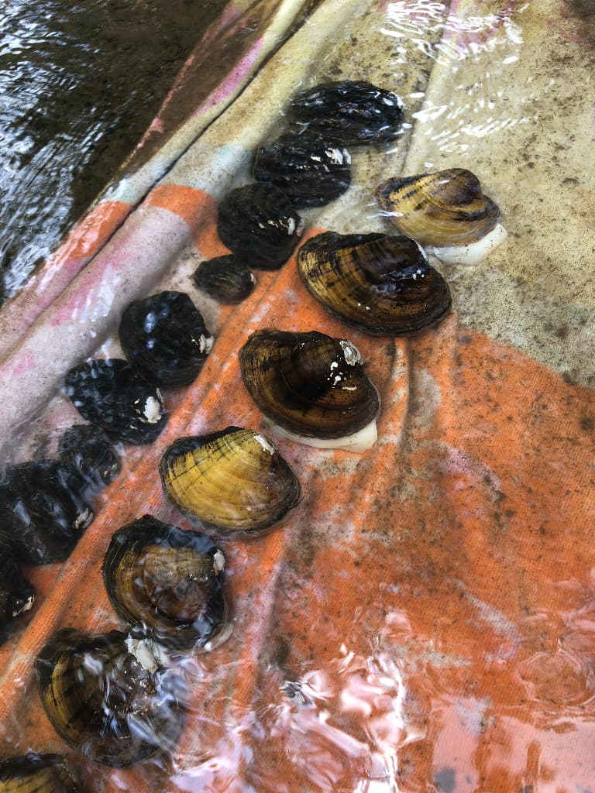
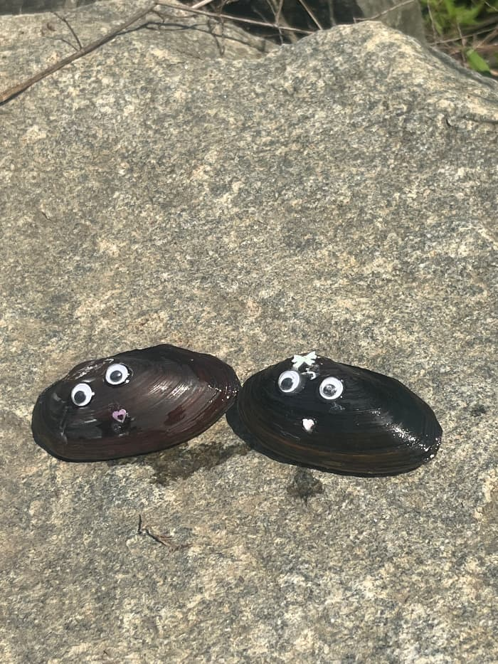

Harnessing Ecological Infrastructure to Make the Urbanizing World a Better Place for All
Ecological infrastructure refers to the interconnected network of natural, semi-natural, and structural landscape features that sustain essential ecosystem services and promote ecological resilience alongside the built environment. We employ a variety of approaches to achieve a common goal: leveraging biodiversity (and anthropogenic structures that support biodiversity) to it's fullest potential.
Mussels as Biofilters
Native freshwater mussels function as dynamic, living suspension feeders within river corridors. By filtering water to feed on suspended particulates, algae, and organic matter, mussel assemblages directly reduce turbidity and improve light penetration across benthic habitats.
Mussels also drive critical nutrient cycling by sequestering carbon, nitrogen, and phosphorus into shell and soft tissue while depositing bioavailable nutrients onto the riverbed for benthic food webs. Deploying targeted assemblages at appropriate densities, we can harness biological filtration as self-sustaining aquatic infrastructure.

Stone Walls as Ecological Infrastructure
Dry-stone walls represent durable landscape features that perform vital ecological functions. These porous structures influence local microclimates, moderate surface hydrology, and anchor slope stability against overland runoff and soil erosion.
The intricate interstitial spaces between stones provide continuous linear corridors and microrefugia for small mammals, reptiles, amphibians, and specialized bryophyte and lichen communities.

Research
Quantifying biophysical performance, demographic viability, and structural connectivity across catchments.
Restoration
Integrating biological reintroductions with terrestrial landscape stabilization features.
Education
Engaging communities through participatory monitoring, field mapping, and watershed science.
Restoration is fundamentally a watershed-scale community effort.
Our collaborative programs invite community scientists and students to participate in mussel tagging, hydrological tracking, and habitat surveys.
View the Field Gallery